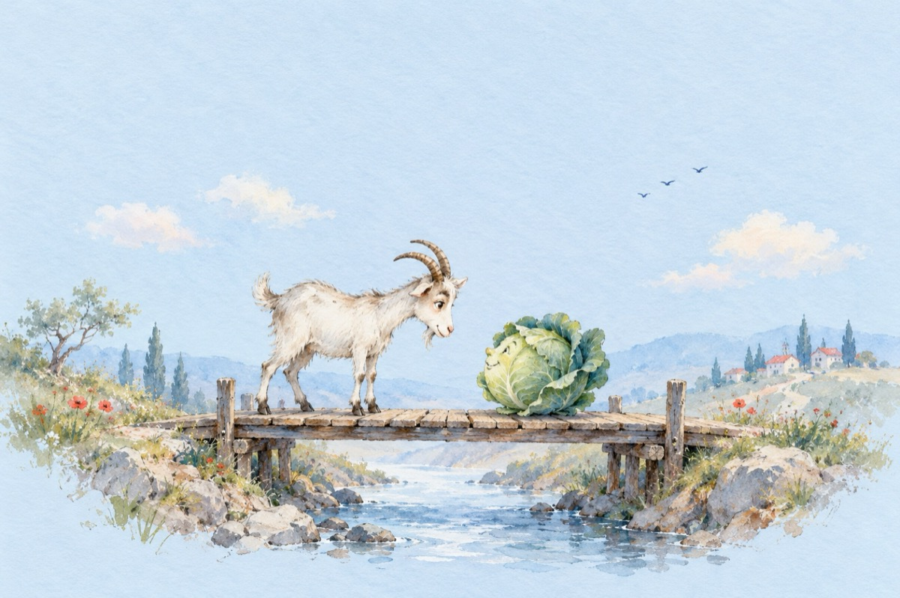

Fabulă
Se povestește că odată
Varza s-a-ntâlnit cu-o capră
Amândouă fiind grăbite
Voiau puntea să o treacă
Pe vrute și pe nevrute
Capra că-i îndreptățită
Varza vrând ca să mai crească
Putea fiind însă îngustă
Amândouă cum să treacă?
Pe capră-o aștepta țapul
Iedul ce-o striga plângând.
Varza-o aștepta udatul
Șu un iepuroi flămând!
S-a ajuns care pe care
Reciproc ca să se-nvingă
Reușind cine-i mai tare
Țapul așteptând la pândă.
Se pune însă-o întrebare
Cine-a rămas păgubit
A învins cine-a învins oare
Iepurașul stă flămând
Capra iedul alăptând.
Vasile Groza
Apare și în: Privește-mă în ochi (2019).